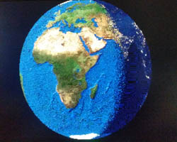
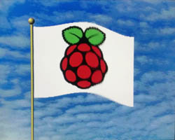

Èesky:
|
PicoQVGA - minimalistickı displej QVGA na Raspberry Pico
verze 1.0, záøí 2021
(c) Miroslav Nìmeèek

Obsah
PicoQVGA je minimalistická knihovna generující VGA signál pro VGA monitor na Raspberry Pico v rozlišení 320x240 / 8 bitù. Na kódu knihovny je formou tutoriálu podrobnì vysvìtlena funkce a pouití øadièù PIO a DMA. I pøes jednoduchost knihovny (jádro zabere asi 400 øádkù v C) je knihovna postaèující pro rozsáhlou oblast vyuití. PicoQVGA je zjednodušenou verzí plné verze knihovny PicoVGA.
Vıstup barevného signálu zajišuje 8 rezistorù, R1 a R8. Barevné sloky jsou: 2 bity pro modrou (B0 a B1), 3 bity pro zelenou (G0 a G2) a 3 bity pro èervenou (R0 a R2). 8-bitovı vıstup zajistí malé nároky na RAM pamì, které není v Raspberry Pico nazbyt (obrazovı buffer 320x240/8 zabere 76 KB z dostupnıch 256 KB).
Knihovna generuje oddìlené synchronizaèní signály HSYNC a VSYNC. S malou úpravou lze generovat jen jeden spoleènı synchronizaèní signál CSYNC (není souèástí kódu), kterı ušetøí 1 pin Pico, avšak nìkteré starší VGA monitory tento mód nepodporují (není jich moc).
Ve schématu je doplòkovì uvedeno i zapojení audio PWM vıstupu, kterı je vyuíván v nìkterıch ukázkovıch programech, ale není nutné ho pouít.
V ukázkovıch programech je k ovládání pouita konzolová klávesnice hostitelského poèítaèe, s vyuitím programovacího USB konektoru a konzolového programu (begPutty).
Budete-li chtít zapojení modifikovat, je moné signály barev B0 a R2 pøesunout na jiné piny. Vdy ale musí platit, e signály musí zachovat stejnou spojitou øadu. To je z dùvodu, e PIO umoòuje mìnit poèátek pole pinù, ale neumoòuje mìnit poøadí pinù. Podobnì signály HSYNC a VSYNC mohou bıt na jinıch pinech, nezávisle na signálech barev, opìt ale platí, e je nutné zachovat jejich posloupnost - tj. pin VSYNC musí bezprostøednì následovat za pinem HSYNC.
Jako první krok si potøebujeme rozplánovat èasování vıstupního signálu. Vyjdeme z èasování VGA signálu, ale pouijeme polovièní rozlišení (QVGA). Obrazové videolinky budou zdvojené. Z normy VGA známe tyto údaje:
VGA rozlišení:
VGA vertikální èasování:
VGA horizontální èasování:
Implicitní systémové hodiny Raspberry Pico jsou 125 MHz. Vydìlíme-li hodiny èíslem 10, dostaneme 12.5 MHz jako nejbliší èíslo k poadovanım hodinám pixelù (12.5875 MHz). Tuto frekvenci bychom sice mohli pouít (a je i souèástí zdrojového kódu jako alternativa), ale mohlo by to znamenat, e 2 pixely po stranách obrazu se mohou u dostat mimo viditelnou oblast monitoru. Zvolíme proto radìji další nejbliší vyšší frekvenci systémovıch hodin, 126 MHz. Pixel clock pro QVGA v tom pøípadì bude 12.6 MHz (0.079365 us na pixel) a obraz bude celı viditelnı.
Jak mùeme zjistit pomocí pøiloeného programu PicoClock, systémové hodiny 126 MHz dostaneme nastavením PLL na hodnoty: vco=1008 MHz, fbdiv=84, pd1=4, pd2=2.
Pro optimální práci s PIO budeme PIO taktovat systémovımi hodinami dìlenımi èíslem 2. Na 1 pixel budeme potøebovat 5 taktù PIO hodin. Z uvedenıch údajù vypoèteme potøebné èasování PIO:
K front a back porch jsme pøièetli 1 takt (symetricky, aby obraz zùstal vystøedìnı), protoe aktivní obraz je o 2 takty kratší ne pøedepsané èasování.
O PIO modulu se dá øíct, e je to jedna z hlavních vlastností, která vyzvedává Raspberry Pico o nìkolik úrovní vıše. PIO je jakoby další procesor v procesoru. PIO modul je zamìøenı pøedevším na programování komunikaèního rozhraní, proto od nìj neèekejte napø. provádìní vıpoètù. Vyuije se tam, kde je potøeba pøesné èasování.
Raspberry Pico má dva nezávislé PIO moduly. Kadı PIO modul má v sobì pamì programu o velikosti 32 instrukcí a 4 statové automaty SM (state machine). Stavové automaty jednoho PIO modulu sdílejí spolu programovou pamì, ale jinak je jejich funkce nezávislá.
Zaèneme PIO programem. PIO program jsou instrukce pro PIO modul. Délka programu je omezena na 32 instrukcí. Do programové pamìti PIO mùeme zavést samostatné programy pro kadı z SM modulù, nebo programy mùeme sdílet, omezeni jsme pouze velikostí pamìti 32 instrukcí. PIO program se pøekládá pøekladaèem "pioasm", kterı je souèástí Raspberry Pico SDK. V pùvodním SDK naleznete verzi pøekladaèe pro Linux, zde v pøiloeném balíku je verze pro Windows.
Soubor instrukcí PIO procesoru není rozsáhlı, je to jen 9 instrukcí (kadá instrukce je dlouhá 16 bitù), ale jak zjistíte, pro komunikaèní programy postaèují. Jedná se o tyto instrukce:
PIO procesor má k dispozici následující registry:
Vysvìtlení k posuvnım registrùm. Pøi vysílání dat pøes PIO zapíše hlavní procesor vysílané 32-bitové slovo do vysílací fronty TX FIFO. Vysílací fronta je dlouhá 4 pozice. Není-li potøebnı pøíjem, mùe se slouèit s pøijímací frontou na délku 8 pozic. Z vysílací fronty si PIO program pøeète vysílané slovo instrukcí PULL a uloí ho do vıstupního posuvného registru OSR. Z OSR registru si program postupnì naèítá data po bitech pomocí instrukce OUT. Pøípadnì je instrukcí OUT mùe zapsat pøímo na vıstupní piny.
Pøi pøíjmu dat pøijímá PIO procesor postupnì stav pinù po bitech instrukcí IN do registru ISR. Instrukcí PUSH pøenese ISR registr do pøijímací fronty RX FIFO, odkud si naètenou 32-bitovou hodnotu pøeète hlavní procesor.
Pro všechny PIO instrukce platí, e kadá instrukce trvá implicitnì pøesnì 1 takt PIO hodin, nezávisle na ostatní èinnosti hlavního procesoru. To umoòuje psát programy s pøesnım èasováním. Instrukce mohou trvat delší èas v pøípadì zádrhelu ve FIFO frontì, nestíhá-li hlavní procesor data vèas zpracovávat.
Kadá PIO instrukce obsahuje 5-bitové pole slouící ke 2 úèelùm:
Kolik bitù z 5-bitového pole bude vyuito pro prodlevu a kolik pro side-set, lze urèit konfigurací SM. V našem driveru budeme pouívat 2 side-set bity pro vıstup synchronizaèních signálù HSYNC a VSYNC. Zbıvající 3 bity pouijeme pro prodlevu, kadá instrukce tak mùe trvat 1 a 8 taktù.
Jeden z bitù 5-bitového pole mùe bıt vyuit jako pøíznak, zda se side-set pole pouívá nebo ne. Neznamená to ovšem, e by všechny zbylé bity byly pouitelné pro prodlevu. Znamená to jen, zda u instrukcí musíme zadávat side-set nebo ne. Zvolíme radìji pevné rozdìlení pole a side-set budeme zadávat u kadé instrukce.
Pøejdìme k PIO programu. Na zaèátku programu uvedeme následující definice:
.program qvga .side_set 2 ; HSYNC and VSYNC output (2 bits) .define NOSYNC 0 ; no sync, output image or blanking .define HSYNC 1 ; HSYNC pulse (or CSYNC pulse) .define VSYNC 2 ; VSYNC pulse .define VHSYNC 3 ; HSYNC and VSYNC pulse .define BPP 8 ; number of bits per pixel
První øádek oznaèuje jméno programu. Jednak pomocí tohoto jména se budeme odkazovat na vygenerovaná návìští a jednak to slouí k oddìlení programù, obsahuje-li jeden soubor více programù.
Druhı øádek definuje nastavení side-set. Èíslo 2 udává, e v kadé instrukci budou vyuity 2 bity 5-bitového pole jako vıstup hodnoty na vıstupní piny. Zbylé 3 bity budou vyuity pro pøídavnou prodlevu.
Hodnota BPP udává poèet bitù na pixel. Kód programu mùeme pouívat pro barevnou hloubku 1, 2, 4, 8, 16 a 32 bitù. Je nutné poèítat s tím, e délka zapsanıch obrazovıch dat musí bıt zarovnaná na 32-bitové slovo. My pouijeme 8-bitové pixely. Obrazová data tedy musí bıt zarovnaná na 4 pixely.
Ostatní øádky jsou definice hodnoty signálù pro side-set. Signály HSYNC a VSYNC musí bıt na pinech bezprostøednì po sobì následujících. Signál VGA vyaduje negativní tvar synchronizaèních pulzù - tj. v klidu jsou signály v úrovni HIGH, pouze bìhem pulzu úroveò klesne na LOW. Tento stav mùeme pøipravit i naší definicí, ale pro pøehlednost pouijeme v programu radìji pozitivní polarizaci a v konfiguraci vıstupních pinù zvolíme negací vıstupního signálu.
Program se bude skládat z krátkıch úsekù, kde kadı úsek bude generovat jeden typ signálu. Zaèneme úsekem, kterı bude generovat signál HSYNC.
; ===== [3 instructions] HSYNC pulse, N=delay in clock cycles - 3 ; starts HSYNC at time 0 public hsync: jmp x--,hsync side HSYNC ; [N+1] loop public entry: ; program entry point out x,27 side HSYNC ; [1] get next loop counter N out pc,5 side HSYNC ; [1] jump to next function
Øádek "public hsync" je veøejné návìští. Znamená to, e pøekladaè vygeneruje C kód s hodnotami návìští, aby je mohl hlavní program pouívat.
První instrukce, "jmp x--,hsync", je programová smyèka s podmínìnım skokem. Instrukce se podívá do registru X a je-li jeho hodnota nenulová, dekrementuje hodnotu X a provede skok na zadané návìští. V pøípadì nulové hodnoty pokraèuje dál a hodnotu X nezmìní. Obsahuje-li registr X na zaèátku hodnotu N, provede se celá smyèka za N+1 taktù. Následující 2 øádky zaberou 2 hodinové takty. Chceme-li tedy dosáhnout urèité doby provádìní celého úseku, musíme na zaèátku nastavit hodnotu X o 3 niší ne je poadovaná doba.
Øádek "public entry:" je vstupní bod do programu. Sem nasmìrujeme program po startu. Zajistí se tím naètení prvního øídicího slova.
Další 2 øádky naètou øídicí slovo z OSR registru a provedou skok na další programovı segment. Nemusíme pouívat instrukci PULL, protoe v konfiguraci bude nastavené automatické naèítání registru OSR z vysílací fronty TX FIFO. První instrukce, "out x,27", naète 27 bitù z registru OSR do registru X. Tuto hodnotu pouijeme jako èítaè pro následující programovı segment. Druhá instrukce, "out pc,5", naète 5 bitù do registru PC. PC je 5-bitovı èítaè programu, nastavením jeho hodnoty se provede skok na jinou adresu v programu.
Vıstupní registr OSR se bìhem instrukce OUT bude posouvat smìrem doprava (k niším bitùm). To je dáno formátem obrazovıch dat - pixel na niší adrese je potøeba vysílat døív ne na vyšší adrese. Ve skuteènosti se data z OSR do X nepøenášejí po bitech, ale jako celistvı bitovı úsek, smìr posunu OSR tedy poøadí pøenesenıch bitù neovlivní.
Pøídavnı parametr "side HSYNC" zajistí, e bìhem provádìní tohoto programového úseku bude nastaven signál HSYNC jako aktivní (side-set vıstupní piny se nastaví na hodnotu "1").
Podobnım zpùsobem vytvoøíme i programové segmenty aktivující signál VSYNC a signál HSYNC+VSYNC.
; ===== [3 instructions] VSYNC pulse, N=delay in clock cycles - 3 ; starts VSYNC at time 0 public vsync: jmp x--,vsync side VSYNC ; [N+1] loop out x,27 side VSYNC ; [1] get next loop counter N out pc,5 side VSYNC ; [1] jump to next function ; ===== [3 instructions] VSYNC and HSYNC pulse, N=delay in clock cycles - 3 ; starts HSYNC and VSYNC at time 0 public vhsync: jmp x--,vhsync side VHSYNC ; [N+1] loop out x,27 side VHSYNC ; [1] get next loop counter N out pc,5 side VHSYNC ; [1] jump to next function
Blíe se pozastavíme u úseku generujícího tmu.
; ===== [4 instructions] DARK pulse, N=delay in clock cycles - 4 ; sets blanking at time 0, starts NOSYNC at time 0 public dark: mov pins,null side NOSYNC ; [1] dark output dark_loop: jmp x--,dark_loop side NOSYNC ; [N+1] loop .wrap_target ; wrap jump target out x,27 side NOSYNC ; [1] get next loop counter N out pc,5 side NOSYNC ; [1] jump to next function
Oproti pøedešlım úsekùm pøibyl øádek "mov pins,null". Øádek zajistí nastavení vıstupních pinù barev na hodnotu 0, protoe registr null pøedstavuje hodnotu nula. Kdybychom potøebovali opaènou hodnotu, pouili bychom monost provedení inverze hodnoty bìhem provádìní instrukce.
Nakonec zbıvá úsek, kterım odešleme obrazová data na vıstup barev.
; ===== [3 instructions] output pixels at 5 clocks per pixel, N=number of pixels-2 ; number of pixels must be multiple of: 1 at BP=32, 2 at BPP=16, 4 at BPP=8, 8 at BPP=4, 16 at BPP=2, 32 at BPP=1 ; Output first pixel at time 0 public output: out pins,BPP side NOSYNC [2] ; [3] output pixel jmp x--,output side NOSYNC [1] ; [2] loop (N+1 pixels) out pins,BPP side NOSYNC [2] ; [3] output pixel .wrap ; wrap jump to .wrap_target
První instrukce, "out pins,BPP", naète z OSR registru 8 bitù (obsahujících data pro 1 pixel) a zapíše je na vıstupní piny barev. Druhá instrukce je èítaè prùchodù. Obsahuje-li registr X na zaèátku poèet N, odešle se touto smyèkou N+1 obrazovıch pixelù na vıstup.
Kromì side-set pole obsahují instrukce i delay prodlevu, uvedenou v hranatıch závorkách []. Je to èas v taktech, kterı se pøidá k základní dobì provedení instrukce, která je 1. První instrukce smyèky (out) bude trvat 3 takty, druhá instrukce (jmp) bude trvat 2 takty. Celkem tedy jeden prùchod smyèkou zabere 5 taktù.
Kdybychom nyní tento úsek ukonèili instrukcemi pro naètení X a skok, které zaberou 2 takty, byl by poslední pixel dlouhı 7 taktù namísto 5. Proto vıstup na poslední pixel provedeme pomocí další instrukce "out". Bude trvat 3 takty, následující instrukce skoku zaberou 2 takty a tím splníme poadavek délky posledního pixelu 5 taktù.
Na vstupu do segmentu musí registr X obsahovat poèet pixelù sníenı o 2.
Poslední segment není ukonèenı 2 instrukcemi 'out' jako v pøedešlıch pøípadech, ale je ukonèen symbolem ".wrap". Wrap je vlastnost pouívaná u smyèek. PIO procesor umoòuje jednu adresu programu oznaèit návìštím .wrap a pokud na tuto adresu narazí, provede okamitı skok na jinou adresu, oznaèenou návìštím ".wrap_target". To slouí k vytváøení smyèek, kdy je na konci smyèky uveden ".wrap" a na zaèátku smyèky ".wrap_target". Wrap má efekt nepodmínìného skoku, ovšem s tím rozdílem, e skok nezabere 1 takt hodin, ale provede se okamitì, bez prodlevy. Lze tak vyuít ke zrychlení smyèky a zkrácení programu. My ho zde nevyuijeme ve smyèce, ale ke zkrácení programu - wrap provede skok na instrukce skoku v pøedešlém segmentu a tím mùeme u posledního segmentu ušetøit 2 instrukce.
Program pøeloíme pøíkazem "pioasm.exe -o c-sdk qvga.pio qvga.pio.h". Vygenerovanı soubor obsahuje definice v C kódu s pøeloenım programem, symbolická návìští a pomocné podprogramy.
Pøipravíme si funkci, která inicializuje PIO a SM. Pro pøehlednost budu uvádìt promìnné a definice bezprostøednì pøed jejich pouitím. Nejdøíve zavedeme PIO program do pamìti.
#define QVGA_PIO pio0 // QVGA PIO #define QVGA_SM 0 // QVGA state machine uint QVGAOff; // offset of QVGA PIO program // load PIO program QVGAOff = pio_add_program(QVGA_PIO, &qvga_program);
V definici jsme si urèili, e pro VGA vıstup pouijeme PIO0 a SM0. Ale mohli bychom nechat na SDK knihovnì, aby urèila volnı PIO a SM a namísto konstant pouívat promìnné.
Funkce pio_add_program pøevezme strukturu vygenerovanou pøekladaèem a instrukce programu v ní uvedené zapíše do programové pamìti PIO SM. Poznamenejme, e programová pamì PIO je dostupná ve formì 32 portù po 16 bitech. Funkce vyhledá od konce programové pamìti volné místo, tam program uloí a navrátí offset zaèátku programu. Mohli bychom sice program zavést na pevnì danou adresu (pøi pøekladu pouít pøíkaz .origin), ale tímto volnìjším zpùsobem mùeme program snáze kombinovat s jinımi programy.
Nakonfigurujeme vıstupní piny.
// QVGA port pins #define QVGA_GPIO_FIRST 2 // first QVGA GPIO #define QVGA_GPIO_NUM 8 // number of QVGA color GPIOs, without HSYNC and VSYNC #define QVGA_GPIO_LAST (QVGA_GPIO_FIRST+QVGA_GPIO_NUM-1) // last QVGA GPIO #define QVGA_GPIO_HSYNC 10 // QVGA HSYNC/CSYNC GPIO #define QVGA_GPIO_VSYNC (QVGA_GPIO_HSYNC+1) // QVGA VSYNC GPIO // configure GPIOs for use by PIO for (i = QVGA_GPIO_FIRST; i <= QVGA_GPIO_LAST; i++) pio_gpio_init(QVGA_PIO, i); pio_gpio_init(QVGA_PIO, QVGA_GPIO_HSYNC); pio_gpio_init(QVGA_PIO, QVGA_GPIO_VSYNC); // set pin direction to output pio_sm_set_consecutive_pindirs(QVGA_PIO, QVGA_SM, QVGA_GPIO_FIRST, QVGA_GPIO_NUM, true); pio_sm_set_consecutive_pindirs(QVGA_PIO, QVGA_SM, QVGA_GPIO_HSYNC, 2, true); // negate HSYNC and VSYNC output gpio_set_outover(QVGA_GPIO_HSYNC, GPIO_OVERRIDE_INVERT); gpio_set_outover(QVGA_GPIO_VSYNC, GPIO_OVERRIDE_INVERT);
V definicích jsme zvolili, e barevnı port je 8 GPIO pinù, poèínaje GPIO2. HSYNC signá je na GPIO10 a VSYNC na GPIO11.
Funkce pio_gpio_init nastaví vıstupní piny do reimu, kdy jsou ovládané pøímo z PIO. Pøíkazem pio_sm_set_consecutive_pindirs nastavíme piny jako vıstup. U pinù HSYNC a VSYNC nastavíme inverzi vıstupu - to proto, abychom mohli v PIO programu poívat pozitivní polarizaci. Ale není to nutné a v programu mùeme pracovat s negativní polarizací signálù.
Pøipravíme strukturu pro konfiguraci SM.
// prepare default PIO program config pio_sm_config cfg = qvga_program_get_default_config(QVGAOff); // map state machine's OUT and MOV pins sm_config_set_out_pins(&cfg, QVGA_GPIO_FIRST, QVGA_GPIO_NUM); // set sideset pins (HSYNC and VSYNC) sm_config_set_sideset_pins(&cfg, QVGA_GPIO_HSYNC);
Funkci qvga_program_get_default_config pøipravil pøekladaè PIO programu. Kromì pøípravy implicitní konfiguraèní struktury obsahuje nastavení wrap návìští (funkce sm_config_set_wrap) a nastavení side-set módu (funkce sm_config_set_sideset). Funkci pøedáváme offset programu, kterı nám døíve navrátila funkce pro zavedení programu do pamìti.
Funkcí sm_config_set_out_pins øekneme SM, na kterém pinu zaèínají vıstupní piny a kolik pinù to je. Jedná se o mapování pro instrukce OUT a MOV. Znamená to, e pokud instrukcemi OUT nebo MOV zapíšeme nìjaká data na vıstupní port PINS, zapíšou se data pøímo na vıstupní piny. Napø. zaèínají-li piny na GPIO2, zapíše se bit 0 odeslanıch dat do portu GPIO2.
Podobnì funkce sm_config_set_sideset_pins mapuje side-set piny nastavením èísla poèáteèního pinu. Poèet pinù zde nenastavujeme, ten byl urèen v døívìjší funkci sm_config_set_sideset.
#define QVGA_CLKDIV 2 // SM divide clock ticks // join FIFO to send only sm_config_set_fifo_join(&cfg, PIO_FIFO_JOIN_TX); // PIO clock divider sm_config_set_clkdiv(&cfg, QVGA_CLKDIV); // shift right, autopull, pull threshold sm_config_set_out_shift(&cfg, true, true, 32);
V dalším kroku pøipojíme pøijímací frontu RX FIFO k vysílací frontì TX FIFO - data nebudeme pøijímat, budeme jen vysílat, a tak mùeme zvıšit délku fronty na 8 úrovní.
Hodiny pro PIO odvodíme ze systémovıch hodin vydìlením èíslem 2. Vıstup jednoho pixelu v PIO programu zabere 5 PIO taktù a tím dosáhneme pixel clock 12.6 MHz.
Nastavíme vıstupní posuvnı registr OSR. Bude se posouvat doprava (jako první pùjde ven niší bajt obrazovıch dat), pull se bude dìlat automaticky s hranicí 32 bitù.
Konfiguraèní strukturu odešleme na SM. V parametru uvedeme vstupní bod, ze kterého program bude startovat. Zatím ale SM startovat nebudeme.
// initialize state machine pio_sm_init(QVGA_PIO, QVGA_SM, QVGAOff+qvga_offset_entry, &cfg);
Data nebudeme do PIO odesílat softwarovì procesorem, ale pomocí DMA øadièe. To proto, abychom procesor zbyteènì nezatìovali, a také protoe procesor by nezajistil spojitı pøenos dat. K tomu si potøebujeme pøipravit buffery, jejich obsah se bude vysílat na PIO.
Jak víme z našeho PIO programu, základem øízení jsou 32-bitová slova obsahující nastavení èítaèe X a skokovou adresu. Na to si pøipravíme makro.
// PIO command (jmp=program address, num=loop counter) #define QVGACMD(jmp, num) ( ((u32)((jmp)+QVGAOff)<<27) | (u32)(num))
V makru je 'jmp' adresa skoku. Budeme sem zadávat hodnoty návìští, které nám vygeneroval pøekladaè. Uvnitø makra se k návìštím pøiète offset poèátku programu a tím se zajistí správná hodnota skoku. Adresa skoku se posune do bitù 27..31, kde ji bude oèekávat PIO program. Na niších 27 bitech doplníme hodnotu pro èítaè X. Nesmíme ovšem zapomenout odeèítat od hodnoty potøebné korekce.
Budeme potøebovat 4 buffery.
#define WIDTH 320 // display width #define QVGA_TOTAL 2002 // total clock ticks #define QVGA_HSYNC 240 // horizontal sync clock ticks #define QVGA_BP 121 // back porch clock ticks #define QVGA_FP 41 // front porch clock ticks // Scanline data buffers (commands sent to PIO) u32 ScanLineImg[3]; // image: HSYNC ... back porch ... image command u32 ScanLineFp; // front porch u32 ScanLineDark[2]; // dark: HSYNC ... back porch + dark + front porch u32 ScanLineSync[2]; // vertical sync: VHSYNC ... VSYNC(back porch + dark + front porch) // image scanline data buffer: HSYNC ... back porch ... image command ScanLineImg[0] = QVGACMD(qvga_offset_hsync, QVGA_HSYNC-3); // HSYNC ScanLineImg[1] = QVGACMD(qvga_offset_dark, QVGA_BP-4); // back porch ScanLineImg[2] = QVGACMD(qvga_offset_output, WIDTH-2); // image // front porch ScanLineFp = QVGACMD(qvga_offset_dark, QVGA_FP-4); // front porch // dark scanline: HSYNC ... back porch + dark + front porch ScanLineDark[0] = QVGACMD(qvga_offset_hsync, QVGA_HSYNC-3); // HSYNC ScanLineDark[1] = QVGACMD(qvga_offset_dark, QVGA_TOTAL-QVGA_HSYNC-4); // back porch + dark + front porch // vertical sync: VHSYNC ... VSYNC(back porch + dark + front porch) ScanLineSync[0] = QVGACMD(qvga_offset_vhsync, QVGA_HSYNC-3); // VHSYNC ScanLineSync[1] = QVGACMD(qvga_offset_vsync, QVGA_TOTAL-QVGA_HSYNC-3); // VSYNC(back porch + dark + front porch)
Jednotlivé videolinky zaèínají HSYNC pulsem, za kterım následuje back porch, obrazová data a front porch. Obrazová videolinka pouívá buffery ScanLineImg a ScanLineFp. Pøi generování zaèínáme bufferem ScanLineImg. V prvním slovì obsahuje vyvolání programového segmentu hsync, kterı aktivuje HSYNC signál. V údaji délky nastavíme délku HSYNC na 240 taktù, ovšem musíme ji sníit o 3, co je základní reie èekací smyèky.
Po HSYNC následuje back porch - co je tma, po dobu 121 taktù. Údaj musíme sníit o 4.
Následuje pøíkaz pro odeslání obrazovıch dat. Pøíkaz provede skok na obsluhu "output", s poètem WIDTH-2. Další data nebudeme odesílat z bufferù, ale pøímo z obrazové pamìti. Za obrazovımi daty odešleme front porch, z bufferu ScanLineFp. Front porch je nutné vdy odeslat po obrazovıch datech, protoe zajistí ztmavení obrazu na èernou barvou. Pøípadnı následující HSYNC signál u barvu nenastavuje.
Moná vás teï napadne otázka - jak PIO program rozliší obrazová data od øídicích slov? Jednoduše - neøeší to. :-) PIO má dobrou vlastnost v tom, e pøi správné funkci zùstává neustále synchronní s pøíchozími daty a tak ani po delší dobì nedojde k nesynchronitì.
Buffer ScanLineDark pouíváme k zobrazení tmavé linky bez obrazu, ve vertikálním front a back porch. Buffer obsahuje jen signál HSYNC následovanı tmavım obrazem a do konce linky.
Buffer ScanLineSync generuje signál VSYNC a od signálu tmavé linky se liší pouze aktivací signálu pro VSYNC. Nenastavuje èernou barvu na obrazové piny, protoe poèítáme s tím, e èerná barva je nastavená z pøedešlıch linek.
Kromì datovıch bufferù, pro datovı DMA, potøebujeme i øídicí buffery, pro øídicí DMA. Podrobnìji v dalších odstavcích.
// Scanline control buffers #define CB_MAX 8 // size of one scanline control buffer (1 link to data buffer requires 2x u32) u32 ScanLineCB[2*CB_MAX]; // 2 control buffers // control buffer 1 - initialize to VSYNC ScanLineCB[0] = 2; // send 2x u32 (send ScanLineSync) ScanLineCB[1] = (u32)&ScanLineSync[0]; // VSYNC data buffer ScanLineCB[2] = 0; // stop mark ScanLineCB[3] = 0; // stop mark // control buffer 1 - initialize to VSYNC ScanLineCB[CB_MAX+0] = 2; // send 2x u32 (send ScanLineSync) ScanLineCB[CB_MAX+1] = (u32)&ScanLineSync[0]; // VSYNC data buffer ScanLineCB[CB_MAX+2] = 0; // stop mark ScanLineCB[CB_MAX+3] = 0; // stop mark
Z pøedchozích øádkù u víme, jaká data chceme odesílat na PIO a jak je dále zpracovat. A jak jsem se u zmínil, nebudeme je odesílat programovì, ale pomocí DMA øadièe. Pro kadou videolinku chceme odeslat nìkolik datovıch bufferù. Mohli bychom pro kadı buffer aktivovat DMA pøenos programovì, co je pomìrnì dost úkonù. Raspberry Pico má pro tento úèel lepší øešení - zøetìzení DMA øadièù. Namísto abychom datovı DMA konfigurovali pro kadı buffer zvláš, necháme to dìlat další DMA.
Zøetìzení bude fungovat následujícím zpùsobem. Data bude na PIO odesílat první DMA kanál, datovı. Kdy dokonèí poadovanı úkol, aktivuje novı pøenos druhého DMA kanálu, øídicího. Øídicí DMA kanál pøenese další øídicí informace do nastavení datového kanálu a spustí bìh datového kanálu. Data pro øidicí DMA jsou uloena v øídicím bufferu. Poslední øídicí data obsahují hodnotu nula. Øídicí DMA tuto hodnotu také pøenese do nastavení datového DMA kanálu, ale ten rozezná nulovou hodnotu, oznaèující konec pøenosu, a aktivuje IRQ signál. Tím se vyvolá pøerušení hlavního procesoru, kterı znovu nakonfiguruje øídicí DMA pro novı pøenos. IRQ se generuje na konci kadé videolinky. Obsluha pøerušení aktivuje pøenos pro další videolinku a mezitím pøipraví buffery pro pøíští pøenos.
Nejdøíve pøipravíme konfiguraci øídicího DMA kanálu.
#define QVGA_DMA_CB 0 // DMA control block of base layer #define QVGA_DMA_PIO 1 // DMA copy data to PIO (raises IRQ0 on quiet) // prepare DMA default config dma_channel_config cfg = dma_channel_get_default_config(QVGA_DMA_CB); // increment address on read from memory channel_config_set_read_increment(&cfg, true); // increment address on write to DMA port channel_config_set_write_increment(&cfg, true); // each DMA transfered entry is 32-bits channel_config_set_transfer_data_size(&cfg, DMA_SIZE_32); // write ring - wrap to 8-byte boundary (TRANS_COUNT and READ_ADDR_TRIG of data DMA) channel_config_set_ring(&cfg, true, 3); // DMA configure dma_channel_configure( QVGA_DMA_CB, // channel &cfg, // configuration &dma_hw->ch[QVGA_DMA_PIO].al3_transfer_count, // write address &ScanLineCB[0], // read address - as first, control buffer 1 will be sent out 2, // number of transfers in u32 (number of transfers per one request from data DMA) false // do not start yet );
Funkcí dma_channel_get_default_config si pøipravíme implicitní konfiguraèní strukturu.
Funkcí channel_config_set_read_increment zvolíme automatickou inkrementaci ètecí adresy. Øídicí DMA ète data z øídicích bufferù a je tedy potøeba, aby se po kadém ètení adresa posunula na další slovo.
Funkcí channel_config_set_write_increment zapneme automatickou inkrementaci zápisové adresy. Øídicí DMA kanál bude pøenášet slova z øídicího bufferu pøímo do øídicích registrù datového DMA kanálu. Budou se pøenášet pøi kadém pøenosu 2 slova po 32 bitech, je tedy nutná automatická inkrementace adresy.
Velikost jedné jednotky pøenášenıch dat je funkcí channel_config_set_transfer_data_size nastavena na 32 bitù. Kadı z øídicích registrù DMA datového kanálu je 32-bitovı.
Funkcí channel_config_set_ring je nastavená velikost kruhu zápisovıch adres na 8 bajtù. Budou se pøenášet 2 slova po 32 bitech, co je dohromady 8 bajtù. Parametr "3" pøedstavuje mocninu 2 velikosti kruhovıch dat, tedy 8 bajtù. DMA kanál pøenese 2 slova do øídicích registrù, poté se ukazatel resetuje o 8 bajtù zpìt.
Funkcí dma_channel_configure se DMA kanál nakonfiguruje podle pøipravené konfiguraèní struktury. Jako zápisová adresa je zvolen tøetí registr ze ètvrté sady aliasù registrù - tj. registry trans_count a read_addr. Kadı DMA kanál lze øídit pomocí 4 registrù a tyto registry jsou uspoøádány ve 4 variantách poøadí. U kadé varianty platí, e zápisem do 4. registru se aktivuje pøenos DMA kanálu. Jednotlivé aliasy DMA registrù jsou:
// +0x0 +0x4 +0x8 +0xC (Trigger) // 0x00 (alias 0): READ_ADDR WRITE_ADDR TRANS_COUNT CTRL_TRIG // 0x10 (alias 1): CTRL READ_ADDR WRITE_ADDR TRANS_COUNT_TRIG // 0x20 (alias 2): CTRL TRANS_COUNT READ_ADDR WRITE_ADDR_TRIG // 0x30 (alias 3): CTRL WRITE_ADDR TRANS_COUNT READ_ADDR_TRIG ... we use this!
Kadım pøenosem se pøenesou 2 slova po 32 bitech. DMA kanál zatím startovat nebudeme.
Dále si pøipravíme datovı DMA kanál.
// prepare DMA default config cfg = dma_channel_get_default_config(QVGA_DMA_PIO); // increment address on read from memory channel_config_set_read_increment(&cfg, true); // do not increment address on write to PIO channel_config_set_write_increment(&cfg, false); // each DMA transfered entry is 32-bits channel_config_set_transfer_data_size(&cfg, DMA_SIZE_32); // DMA data request for sending data to PIO channel_config_set_dreq(&cfg, pio_get_dreq(QVGA_PIO, QVGA_SM, true)); // chain channel to DMA control block channel_config_set_chain_to(&cfg, QVGA_DMA_CB); // raise the IRQ flag when 0 is written to a trigger register (end of chain) channel_config_set_irq_quiet(&cfg, true); // set high priority cfg.ctrl |= DMA_CH0_CTRL_TRIG_HIGH_PRIORITY_BITS; // DMA configure dma_channel_configure( QVGA_DMA_PIO, // channel &cfg, // configuration &QVGA_PIO->txf[QVGA_SM], // write address NULL, // read address 0, // number of transfers in u32 false // do not start immediately );
Podobnì, jako u øídicího DMA kanálu, zvolíme automatickou inkrementaci ètecí adresy a velikost jednotky dat 32 bitù. U zápisové adresy nebudeme volit automatickou inkrementaci - budeme zapisovat data vdy jen na jednu adresu, do TX FIFO øadièe PIO SM.
Funkcí channel_config_set_dreq nastavíme, e DMA pøenos se bude spouštìt na poadavek dat od PIO v pøípadì nedostatku dat ve vysílacím FIFO.
Funkce channel_config_set_chain_to zajistí zøetìzení datového DMA s øídicím DMA. Dokonèí-li datovı DMA kanál svùj pøenos, probudí øídicí DMA kanál pomocí zøetìzení, a ten mu odešle nové øídicí informace.
Funkce channel_config_set_irq_quiet aktivuje "tichı reim". Poslední øídicí informace, kterou øídicí DMA kanál pøedá datovému DMA kanálu (na konci videolinky), bude hodnota 0. Zápisem hodnoty 0 do spouštìcího (posledního) registru se nenastartuje další pøenos, ale datovı DMA kanál aktivuje IRQ signál, kterı vyvolá pøerušení hlavního procesoru a zahájení nového pøenosu.
Datovému kanálu je nastavena vyšší priorita. Jednotlivé DMA kanály jsou procesorem obsluhovány postupnì (do kruhu), s upøednostnìním kanálù s vyšší prioritou. QVGA generátor vyaduje vysokou prioritu - zpodìní DMA pøenosu by mohlo znamenat vıpadek obrazového signálu (stává se napø. pøi ètení dat z externí Flash pamìti).
Jako zápisová adresa se zvolí vysílací FIFO port PIO SM øadièe. Ostatní parametry není nutné nastavovat, nastaví je øídicí DMA kanál pøi prvním pøenosu.
Nakonec nakonfigurujeme IRQ0, kterı bude aktivován datovım DMA na konci kadé videolinky.
// enable DMA channel IRQ0 dma_channel_set_irq0_enabled(QVGA_DMA_PIO, true); // set DMA IRQ handler irq_set_exclusive_handler(DMA_IRQ_0, QVgaLine); // set highest IRQ priority irq_set_priority(DMA_IRQ_0, 0);
Funkcí dma_channel_set_irq0_enabled se povolí, e datovı DMA kanál bude aktivovat signál IRQ0.
Funkce irq_set_exclusive_handler nastaví adresu funkce pro obsluhu IRQ0 pøerušení. Pouijeme exkluzivní obsluhu, protoe obsluha musí bıt rychlá, bez prodlev, jinak by mohl obraz vypadávat. Ze stejného dùvodu je pro pøerušení IRQ0 nastavena maximální priorita.
Na konci kadé videolinky vyvolá datovı DMA kanál pøerušení IRQ0. Vyvolá se obsluha, ve které aktivujeme DMA pøenos pro další videolinku a pøipravíme buffery pro pøíští videolinku. Pøerušení se aktivuje ve chvíli, kdy se do vysílacího FIFO odešlou poslední obrazová data a pøíkaz pro front porch, tedy pøed pøíštím HSYNC. Prodleva pro front porch a velikost FIFO bufferu zajistí prodlevu k nastavení dalšího pøenosu. U obsluhy si tak lze vystaèit s C kódem bez assembleru, pøesto ale èasu není nazbyt a je potøeba rychlá odezva.
u32* ScanLineCBNext; // next control buffer
// saved integer divider state
hw_divider_state_t SaveDividerState;
// QVGA DMA handler - called on end of every scanline
void __not_in_flash_func(QVgaLine)()
{
// Clear the interrupt request for DMA control channel
dma_hw->ints0 = (1u << QVGA_DMA_PIO);
// update DMA control channel and run it
dma_channel_set_read_addr(QVGA_DMA_CB, ScanLineCBNext, true);
// save integer divider state
hw_divider_save_state(&SaveDividerState);
...
// restore integer divider state
hw_divider_restore_state(&SaveDividerState);
}
Z dùvodu rychlé odezvy je záhlaví funkce oznaèeno typem __not_in_flash_func. V tom pøípadì je celı kód funkce pøi startu programu zkopírován do RAM pamìti, odkud je spouštìn, namísto spouštìní z externí Flash pamìti. U krátkého programu rozdíl nezpozorujete, ale bude-li váš program obsahovat více kódu, nevejdou se instrukce programu do cache pamìti procesoru a budou naèítány z externí Flash pamìti. To je pomìrnì zdlouhavá operace. Pokud by byl kód pøerušení naèítán z externí Flash, znamenalo by to pøíliš dlouhou prodlevu a tím i vıpadek videosignálu.
Na zaèátku funkce je nejdøíve vynulován poadavek pøerušení IRQ0. To kdyby se funkce zdrela v obsluze, tak a se neztratí pøípadnı pøíští poadavek.
Funkcí dma_channel_set_read_addr se nastaví ètecí adresa øídicího DMA kanálu pro novı pøenos a DMA pøenos se spustí. Ostatní parametry, jako poèet pøenesenıch dat, zùstávají stejné z døívìjšího nastavení.
Funkce hw_divider_save_state uchová registry hardwarové dìlièky do pomocného bufferu. Hardwarová dìlièka je specialita Raspberry Pico. Umoòuje 32-bitové celoèíselné dìlení a vıpoèet trvá 8 systémovıch taktù. Její stav není automaticky uchován v obsluze pøerušení, protoe nepatøí do standardních registrù procesoru. Pokud by pøekladaè zde v obsluze pouil celoèíselné dìlení, obsah dìlièky by se zmìnil a hlavní program by mohl dostat chybnı vıpoèet. Obsah dìlièky se obnoví funkcí hw_divider_restore_state na konci obsluhy pøerušení. Kódu uvnitø obsluhy se budeme vìnovat dále. Pøed uloením stavu dìlièky je potøeba poèkat minimální èas 8 taktù hodin, aby se dokonèila provádìná operace, ale to je v tomto pøípadì zajištìno.
int QVgaBufInx; // current running control buffer // switch current buffer index (bufinx = current preparing buffer, QVgaBufInx = current running buffer) int bufinx = QVgaBufInx; QVgaBufInx = bufinx ^ 1; // prepare control buffer to be processed u32* cb = &ScanLineCB[bufinx*CB_MAX]; ScanLineCBNext = cb;
Pøi obsluze øídicího DMA pouíváme 2 øídicí buffery ScanLineCB, které mezi sebou neustále støídáme. Kterı buffer se aktuálnì pouívá, nám øíká promìnná QVgaBufInx. Pøi kadé obsluze pøerušení pøeklopíme èíslo aktuálního bufferu a pøipravíme si ukazatel na øídicí buffer, kterı bude pouit v pøíští obsluze.
volatile int QVgaScanLine; // current processed scan line 0... (next displayed scan line)
volatile u32 QVgaFrame; // frame counter
// increment scanline (1..)
int line = QVgaScanLine; // current scanline
line++; // new current scanline
if (line >= QVGA_VTOT) // last scanline?
{
QVgaFrame++; // increment frame counter
line = 0; // restart scanline
}
QVgaScanLine = line; // store new scanline
Promìnná QVgaScanLine nás informuje o tom, která videolinka aktuálnì probíhá. V kadé obsluze pøerušení ji inkrementujeme a pokud dosáhne konce snímku, vynulujeme ji a souèasnì inkrementujeme èítaè snímkù QVgaFrame. Èítaè videolinek mùeme pouívat v hlavním programu k detekci zatemòovacího pulsu (pro "èisté" zobrazení bez narušení obrazu) a èítaè snímkù k èasování a synchronizaci programu.
V další obsluze budeme pøipravovat obsah øídicího bufferu pro další videolinku, v závislosti podle èísla videolinky.
// check scanline
line -= QVGA_VSYNC;
if (line < 0)
{
// VSYNC
*cb++ = 2;
*cb++ = (u32)&ScanLineSync[0];
}
Pøi obsluze linky s vertikální synchronizací uloíme do øídicího bufferu adresu datového bufferu s øídicími kódy pro vertikální synchronizaci. Buffer obsahuje 2 slova po 32 bitech - HSYNC a zatemnìní.
// front porch and back porch
line -= QVGA_VBACK;
if ((line < 0) || (line >= QVGA_VACT))
{
// dark line
*cb++ = 2;
*cb++ = (u32)&ScanLineDark[0];
}
V obsluze front a back porch vysíláme pouze èernı obraz, tedy 2 slova z bufferu zatemnìní.
// prepare image line line >>= 1; // HSYNC ... back porch ... image command *cb++ = 3; *cb++ = (u32)&ScanLineImg[0]; // image data *cb++ = WIDTH/4; *cb++ = (u32)&pFrameBuf[line*WIDTH]; // front porch *cb++ = 1; *cb++ = (u32)&ScanLineFp;
V obsluze zobrazení obrazu vydìlíme èíslo videolinky èíslem 2, protoe linky budou zdvojené. Namísto 480 videolinek budeme generovat 240 linek obrazu. Nejdøíve vloíme odkaz na buffer se zaèátkem videolinky - HSYNC, back porch a pøíkaz k vysílání dat. Dále uloíme odkaz na obrazová data. Vypoèteme adresu v obrazovém bufferu, jako délku dat pouijeme šíøku obrazu/4 (vysílá se po 32 bitech). Z tohoto dùvodu je nutné, aby obrazové buffery byly vdy zarovnané na 32 bitù. Po obrazovıch datech odešleme front porch, jako 1 øídicí slovo.
// end mark *cb++ = 0; *cb = 0;
Na závìr všech segmentù ukonèíme øídicí buffer nulami. To je koncová znaèka, která pøíštì zajistí vyvolání nového IRQ pøerušení.
Nejdelší øídicí kód je pro obsluhu zobrazení. Do øídicího bufferu se uloí 6 øídicích slov, plus koncová znaèka 2 slova. To je celkem 8 slov. Z toho dùvodu je velikost jednoho øídicího bufferu nastavena na 8 slov, pomocí definice CB_MAX. V pøípadì modifikací kódu je na to potøeba pamatovat a pøípadnì velikost bufferu zvìtšit.
Funkce pro celkovou inicializaci QVGA knihovny bude mít následující obsah.
#define QVGA_VCO (1008*1000*1000) // PLL VCO frequency in Hz #define QVGA_PD1 4 // PLL PD1 #define QVGA_PD2 2 // PLL PD2 // initialize system clock set_sys_clock_pll(QVGA_VCO, QVGA_PD1, QVGA_PD2); // initialize PIO QVgaPioInit(); // initialize scanline buffers QVgaBufInit(); // initialize DMA QVgaDmaInit(); // initialize parameters QVgaScanLine = 0; // currently processed scanline QVgaBufInx = 0; // at first, control buffer 1 will be sent out QVgaFrame = 0; // current frame ScanLineCBNext = &ScanLineCB[CB_MAX]; // send control buffer 2 next // enable DMA IRQ irq_set_enabled(DMA_IRQ_0, true); // start DMA dma_channel_start(QVGA_DMA_CB); // run state machine pio_sm_set_enabled(QVGA_PIO, QVGA_SM, true);
Pøed inicializací knihovny jsou funkcí set_sys_clock_pll nastaveny systémové hodiny na 126 MHz. Funkci je moné uvést v hlavní funkci programu nebo ji úplnì vynechat (ponechat implicitní nastavení 125 MHz) a pouít trochu jiné nastavení èasování QVGA knihovny - mùe se ovšem projevit chybìjícími 2 pixely na zaèátku a konci obrazu.
Funkcí QVgaPioInit se inicializuje PIO. Funkcí QVgaBufInit se pøipraví datové a øídicí buffery. Funkcí QVgaDmaInit se inicializují DMA kanály.
Nastaví se globální promìnné na vıchozí hodnoty - start videolinkou 0, start prvního øídicího bloku, pøíštì bude øídicí blok 1.
Funkcí irq_set_enabled se povolí vyvolání pøerušení IRQ0.
Funkcí dma_channel_start se odstartuje øídicí DMA kanál. Ten naète první øídicí blok a aktivuje datovı DMA kanál.
Funkcí pio_sm_set_enabled se odstartuje PIO program. Program zaène odèerpávat data z FIFO, vyvolávat poadavky na DMA pøenos a vysílat data na vıstupní porty.
#define FRAMESIZE (WIDTH*HEIGHT) // display frame size in bytes (=76800) // display frame buffer ALIGNED u8 FrameBuf[FRAMESIZE]; pFrameBuf = FrameBuf; // front buffer pDrawBuf = FrameBuf; // back buffer
Pøed aktivací QVGA knihovny je nutné pøipravit v hlavním programu obrazovı buffer. Buffer musí mít velikost FRAMESIZE a musí bıt zarovnanı na 32 bitù (to zajistí makro ALIGNED). Ukazatel na obrazovı buffer je potøeba nastavit do promìnné pFrameBuf. Je-li pouívána knihovna pro kreslení, je potøeba nastavit i ukazatel do promìnné pDrawBuf. Knihovna umoòuje pouívat jinı buffer pro kreslení a jinı pro zobrazení. Je tak moné pøipravit obraz bez zobrazení a bez vzniku pøechodnıch artefaktù a obrazy poté pøepnout.
Obsluha QVGA zobrazení je pomìrnì choulostivá záleitost. Pokud se pøenosovı øetìzec nìkde pøeruší nebo pozastaví, dojde k vıpadku generovaného signálu, co mùe znamenat ztmavení obrazu QVGA monitoru i na nìkolik sekund. Proto je potøeba dbát na co nejlepší provozní podmínky QVGA generátoru.
Jedním monım zádrhelem je pøerušení. V dobì zpracování jiného pøerušení nemùe procesor obslouit poadavek pøerušení od obsluhy QVGA signálu, obraz by mohl vypadnout. To by znamenalo, e by nebylo moné pouívat jiná pøerušení ne z generátoru QVGA signálu.
Naštìstí procesor Rasberry Pico má na to øešení, pomocí druhého jádra procesoru. Obsluhy pøerušení jader procesoru jsou na sobì nezávislé. Je tedy moné vyhradit druhé jádro (s èíslem 1) pro obsluhu QVGA obrazu a první jádro (s èíslem 0) pro chod hlavního programu a obsluhy ostatních pøerušení. Obsluha QVGA signálu je èasovì nenároèná a proto není problém pouívat druhé jádro i pro chod programù. Omezení spoèívá pouze ve vyhrazení pøerušení v druhém jádru pouze pro QVGA.
// initialize QVGA
// QVgaInit();
multicore_launch_core1(QVgaCore);
void (* volatile Core1Fnc)() = NULL; // core 1 remote function
// QVGA core
void QVgaCore()
{
void (*fnc)();
// initialize QVGA
QVgaInit();
// infinite loop
while (true)
{
// data memory barrier
__dmb();
// execute remote function
fnc = Core1Fnc;
if (fnc != NULL)
{
fnc();
__dmb();
Core1Fnc = NULL;
}
}
}
// execute core 1 remote function
void Core1Exec(void (*fnc)())
{
__dmb();
Core1Fnc = fnc;
__dmb();
}
// check if core 1 is busy (executing remote function)
Bool Core1Busy()
{
__dmb();
return Core1Fnc != NULL;
}
// wait if core 1 is busy (executing remote function)
void Core1Wait()
{
while (Core1Busy()) {}
}
Funkce QVgaCore je obsluha QVGA displeje v druhém jádru procesoru. Obsluhu spustíme funkcí multicore_launch_core1. Funkce pøi svém startu spustí obsluhu QVGA na druhém jádru funkcí QVgaInit. Poté procesor bìhá v nekoneèné smyèce a èeká na pøípadnou aktivaci dálkové funkce. Pøijde-li od hlavního procesoru povel k provedení dálkové funkce (voláním funkce Core1Exec), funkce se provede a pokraèuje se v nekoneèné smyèce.
Povšimnìte si funkcí __dmb. To je instrukce datové bariéry. Datová bariéra zajistí, e jádro procesoru zajistí uloení své zápisové cache pamìti do sdílené RAM pamìti a tím data uvidí i druhé jádro. Bez datové bariéry by se mohlo stát, e jedno jádro nastaví obsah promìnné, ale zmìnìná data zùstanou jen v cache pamìti jednoho jádra, a druhé jádro zmìnìná data neuvidí.
Funkce Core1Exec slouí ke spuštìní funkce v druhém jádru. Funkcí Core1Busy mùe první jádro sledovat, zda se funkce stále ještì zpracovává. Pøípadnì mùe funkcí Core1Wait poèkat, a se funkce dokonèí. Pøi pøedávání dat mezi jádry procesoru pamatujte na vkládání datové bariéry __dmb.
Abychom nemuseli QVGA obsluhu spouštìt z hlavního programu, je do knihovny doplnìno automatická inicializace knihovny pomocí následujícího kódu.
// auto initialization
Bool QVgaAutoInit()
{
multicore_launch_core1(QVgaCore);
return True;
}
Bool QVgaAutoInitOK = QVgaAutoInit();
Kromì hlavního jádra obsahuje PicoQVGA knihovna i další podpùrné funkce. Programy a utility jsou ve Windows EXE formátu.
draw - je knihovna pro kreslení do obrazového bufferu. Pøed pouitím je nutné nastavit promìnnou pDrawBuf na adresu obrazového bufferu, s rozmìry WIDTH x HEIGHT. Knihovna obsahuje funkce pro kreslení obdélníku, rámu, kruhu, krunice, texty a obrázky. Ukazatel na obrazovı buffer je moné nastavit jinı ne pro zobrazení a tak si pøipravit obraz na pozadí, a a po vykreslení obrazové buffery pøepnout.
rand - generátor náhodného èísla. Knihovna generuje náhodná èísla s 32-bitovım seed, s rùznou velikostí vıstupních dat a ve volitelnıch rozsazích. Poznámka: nepouívejte ke generování náhodného èísla v intervalu funkci modulo %, vısledná náhodnost není rovnomìrná. Knihovna zajistí rovnomìrnìjší rozloení pravdìpodobnosti.
pwmsnd - zvukovı vıstup. Knihovna aktivuje PWM generátor na pøíslušném vıstupním pinu. K pinu lze (pøes RC filtr) pøipojit sluchátka nebo externí zesilovaè. Zvukovı soubor má formát PCM 22050 Hz, mono, 8 bitù unsigned. Je moné jak jednorázové pøehrátí zvuku, tak i opakované pøehrávání s promìnlivou rychlostí.
pal332 - program pro vygenerování barevnıch palet RGB332 pro knihovnu PicoQVGA. Vytvoøenı soubor pal332.act lze pouít v programu Photoshop ke konverzi obrázkù na palety knihovny PicoQVGA.
RaspPicoImg - utilita pro import obrázkù do zdrojového kódu. Obrázek musí bıt BMP v 8-bitovém módu RGB332 bez komprese, se zapnutım pøepínaèem pro obrácení poøadí linek.
PicoClock - vıpoèet nastavení PLL generátoru systémovıch hodin.
RaspPicoSnd - konverze zvukù do zdrojového kódu. Zvuky musí bıt WAV ve formátu PCM, 8 bitù unsigned mono, 22050 Hz.
Programy jsou pøipravené pro ovládání klávesnicí pøes konzoli PC. Jako konzoli lze pouít program begPutty a virtuální sériovı USB port. Nìkteré programy pouívají zvuk - generování PWM zvuku pøes pin GP0 (oznaèeno poznámkou "(zvuk)").
 |
Balloons - demonstrace kreslení do back bufferu, poletující balonky (celkem 23 sprajtù). |
 |
Draw - demonstrace kreslení grafickıch prvkù. Pro ukázku se støídá pomalé vykreslování a kreslení maximální rychlostí. |
|  | Earth - rotující zemìkoule. Softwarová sférická transformace obrázku. |
 |
Eggs - logická hra (zvuk). Vychází ze hry Reversi. Cílem je získat co nejvíce vlastních kamenù. Jeden hráè mìní kameny ve smìru slepice-kuøe-vejce, druhı hráè opaènım smìrem. Ovládání: L vpravo, I nahoru, J vlevo, K dolù, H pomoc, Q konec, P 2 hráèi, D demo, mezerník poloení kamene, Enter ok. Lze hrát proti jinému hráèi i proti poèítaèi. |
 |
Fifteen - logická hra (zvuk). Cílem je seøadit kameny v poøadí 1 a 15. Ovládání: L vpravo, I nahoru, J vlevo, K dolù, Q nová hra. |
|  | Flag - vlající vlajka. |
 |
Hello World - nejjednodušší ukázkovı pøíklad pouití knihovny PicoQVGA. |
 |
Hypno - hypnotizující rotující obrazec. Ukázka maticové transformace obrázku. |
| Life - simulátor ivota bunìk (celulární automat). Buòky se v kadém kroku mìní podle poètu sousedních bunìk: pro 1 a ménì buòka zaniká na osamocení, pro 4 a více buòka zaniká na pøemnoení, pro 3 vznikne nová buòka, pro 2 není zmìna. Ve høe se lze pøepínat mezi 10 obrazovkami (sloty) a pøenášet obraz mezi nimi pomocí schránky. V kadém slotu je pøedpøipravena definice populárních kombinací. Ovládání: L vpravo, I nahoru, J vlevo, K dolù, C kopie do schránky, V vloení ze schránky, D vymazání plochy, mezerník zmìna buòky, Enter start/stop automatu, 0-9 vıbìr slotu. | |
 |
Lines - generátor èárovıch relaxaèních obrazcù. |
 |
Mandelbrot - generátor fraktálovıch obrazcù Mandelbrotovy mnoiny. Ke generování je pouita integer matematika a díky tomu je pøekreslení obrazce rychlé. Je však nutno poèítat s tím, e pøi zvìtšování mìøítka zobrazení je potøebná rostoucí pøesnost poètu èíslic. Pouitá integer a float matematika vystaèí do mìøítka zvìtšení 10^5, double matematika do mìøítka 10^10. Pøi dalším zvìtšování se namísto obrazce zobrazí u jen barevné èáry. Ovládání: E nahoru, S vlevo, D vpravo, X dolù, Q zvìtšení mìøítka, A zmenšení mìøítka, I pøepnutí na celoèíselnou matematiku (nejrychlejší, dosah do 10^-5), F pøepnutí na float matematiku (pomalejší, dosah do 10^-5), B pøepnutí na double matematiku (pomalá, dosah do 10^-10), O sníení poètu krokù iterací, P zvıšení poètu krokù iterací, mezera pøekreslení obrazovky. |
 |
Matrix Rain - simulace "matrixového kódového deštì". |
 |
Maze - cílem je najít cestu z bludištì. Bludištì jsou generována náhodnì programovì. Ovládání: J vlevo, I nahoru, L vpravo, K dolù, H pomoc (ukázání dveøí). |
| Monoscope - test displeje, zobrazí monoskop. | |
 |
Pi - vıpoèet èísla Pi na 1180 èíslic. Po vıpoètu je vısledek zkontrolován s oèekávanım vzorkem. |
| Pixels - náhodné generování barevnıch pixelù. | |
 |
Raytrace - generování 3D obrazce metodou ray tracing. Vzhledem k omezené barevné hloubce PicoQVGA je pøi zobrazení pouit rastrovı dithering ("zrnitost" obrázku). |
| RGBtest - test barev | |
 |
Spheres - náhodné generování koulí. |
| Spots - náhodné generování skvrn. | |
 |
Twister - zkroucení texturovaného kvádru. Slouí jako ukázka programové deformace obrázku. |
 |
Water Surface - simulace vlnící se vodní hladiny (zvuk). |
Autor: Miroslav Nìmeèek, http://panda38.sweb.cz
{kind=link}
{kind=link}
{kind=link}
{kind=link}
{kind=link}
{kind=link}